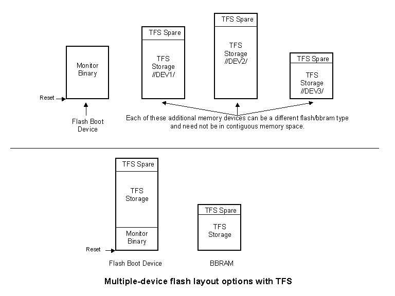

The monitor itself is a program. As a program, it doesn't require much of the system that it runs on... An RS-232 port, maybe an ethernet port, some RAM and some flash. That's about it, and if left at this point, chances are likely that the hardware will support the needs of the monitor. On the other hand, the application that the monitor will eventually be turning control over to may have requirements that justify a little bit of up-front thinking with regard to the memory layout. There are a few things to consider when configuring a memory design for use with a system that will run with MicroMonitor. A wide range of flash devices are now available. For the sake of this discussion, there are a few major distinctions between the various devices available: the size of the device and the flexibility it provides with regard to sector protection...Following is a list of considerations that start with a system that needs minimal memory support, up through a system that should consider additional hardware support for TFS. Each question is followed by a brief discussion and a device suggestion in italics.
- The size of the device is pretty obvious. You must be sure the application you plan to run, plus the monitor, will fit in the device.
- The sector protection flexibility is a bit less obvious but must be considered if there is any need for some portion of the device to be unprogrammable while other portions are programmable. There are a lot of options here. Some devices can be programmed with an external device programmer and then certain sectors can be made uneraseable. Once put into the system those uneraseable sectors are safe from any "devious" firmware that may accidentally attempt to corrupt that space. This is good. On the other hand, if those sectors ever need to be reprogrammed, then the device will have to be removed from the target system and reprogrammed by the external device programmer. Some of the newer parts support "temporary sector un-protect" and there are varying levels of support for this. Some of the parts go into an "unprotect" mode if some higher voltage is applied to a pin, while others simply need to have one of their pins set to a high or low state (via some physical jumper). Lots of choices here, so think about what you need before you just assume "flash is flash".
Will the system ever be updated after initial factory installation?
If the answer to this question is no, then you have the simplest of systems. The monitor and application files can be burned into the memory and as long as the code doesn't try to modify anything, everything will work fine. Since this system does not require any in-system changes, it would be adequate to use EPROM, but EPROM is quickly becoming "old" technology. Careful consideration should be taken if EPROM is being considered. Much of the flexibility of the monitor is lost without the ability to write to the file system.Is it ok for the monitor binary to be in flash space that is eraseable?
If the answer to this question is yes, then the monitor and application files can all exist in the same flash device and there is no need to consider any hardware-assisted flash protection, just leave all the flash in its normal write/erase more. If the answer to this is no, then either the sectors of the flash device that contain the monitor must be protected, or the boot monitor must be in a different device than TFS. This system would be adequately served by an AMD 29F010-type device. It's simple, and is probably at the lower end of the price range for flash.
Note that if the monitor binary is in space that is not eraseable, then it cannot be updated in the field.Is there a need for some files in TFS to be un-eraseable and others to be eraseable?
If the answer to this is yes, then the hardware must be able to selectively protect (or not) multiple sectors of flash space. Note that this does not necessarily mean any additional hardware, it can be addressed by selecting a more versatile flash device. The Intel TE28F320 device (family) is very versatile for this kind of stuff.Is there a need for some files to be very frequently written and rewritten?
If the answer to this is yes, then the best solution is to add some battery backed ram to the system and overlay TFS onto that memory range. Note that we are talking about tens-of-thousands of rewrites here, not just a few. Dallas Semiconductor makes BBRAM parts that have the battery built into the device and tout a 10-year life. They also have devices that allow you to turn a normal SRAM into a battery-backed RAM.Once the answers to these questions are known, then it's necessary to decide what hardware support to add and if not added, what adjustments need to be made to the requirements. For the bottom boot system, the monitor would reside just above the reset vector address of the CPU. For the top boot system, the monitor would reside just below the reset vector address of the CPU. Following are a few diagrams that should help...

Note that there is additional discussion on flash in the flash command and the boot block safety appnote.